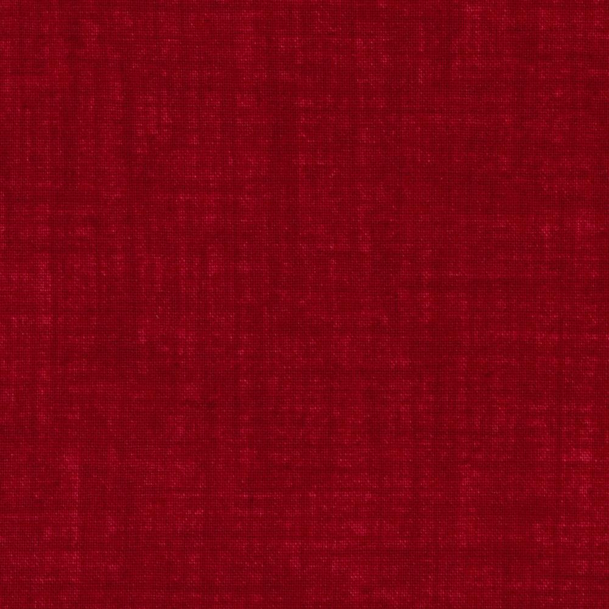
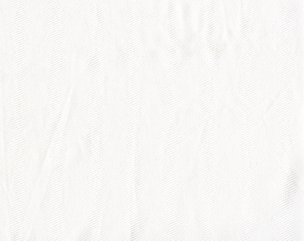

Jogo das Damas
- Player 1
- 00:000 - 0
- Player 2
- Draw!
- Draw!
Moves are allowed only on the dark squares, so pieces always move diagonally. Single pieces are always limited to forward moves (toward the opponent).
A piece making a non-capturing move (not involving a jump) may move only one square.
A piece making a capturing move (a jump) leaps over one of the opponent's pieces, landing in a straight diagonal line on the other side. Only one piece may be captured in a single jump; however, multiple jumps are allowed during a single turn.
When a piece is captured, it is removed from the board.
If a player is able to make a capture, there is no option; the jump must be made. If more than one capture is available, the player is free to choose whichever he or she prefers.
When a piece reaches the furthest row from the player who controls that piece, it is crowned and becomes a king. One of the pieces which had been captured is placed on top of the king so that it is twice as high as a single piece.
Kings are limited to moving diagonally but may move both forward and backward. (Remember that single pieces, i.e. non-kings, are always limited to forward moves.)
Kings may combine jumps in several directions, forward and backward, on the same turn. Single pieces may shift direction diagonally during a multiple capture turn, but must always jump forward (toward the opponent).